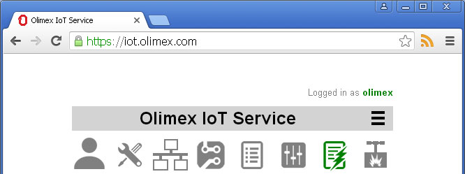
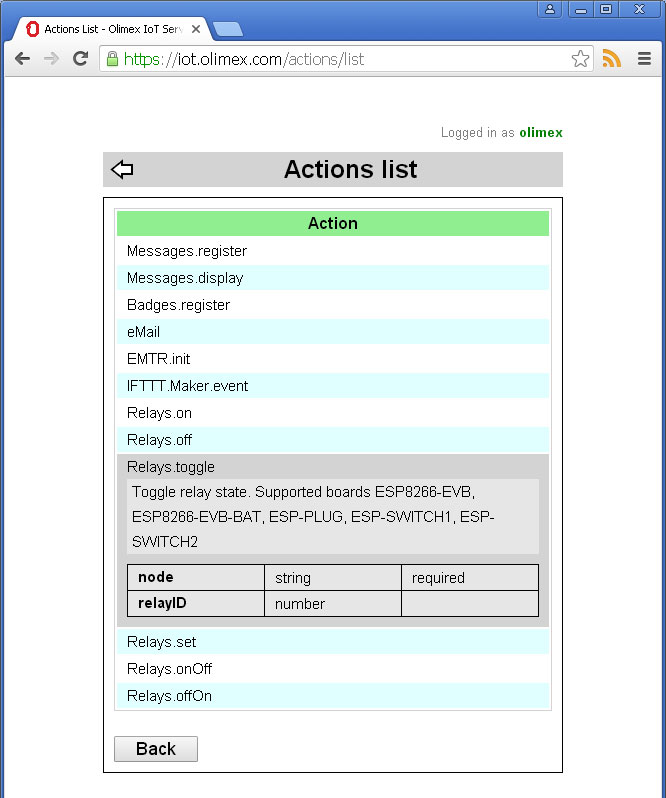

Back to OlimexIoT Help
Actions are plugin functions which perform certain tasks.
For example, an action can send an e-mail to the user or switch a relay on.
List of implemented actions can be accessed from the main screen, click on the actions icon .
Click on the action name to see short description and list of parameters
### TODO ### How to write an action
Continue with Triggers
Back to OlimexIoT Help